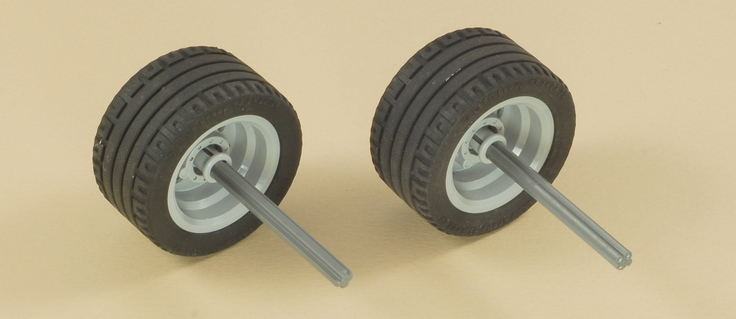
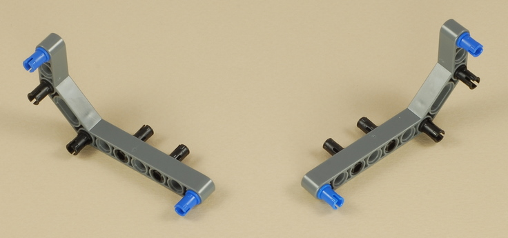

Fun Projects for your LEGO� MINDSTORMS� NXT!
|
|
Fun Projects for your LEGO� MINDSTORMS� NXT! |
| Race Car |
|

1
2

3

4
5
6
7
8

9
10
11
12
13
14

15
16
| The color sensor wire should come out of a gap under the center rear of the NXT. Connect it to port 3 on the NXT. |
| The two drive motors connect to ports B and
C on the NXT. The wires should be crossed twice (once under
the NXT and another time under the car), so that the B motor stays on
the left side of the car and the C motor is on the right side.
The steering motor wire should come out of a gap under the center front of the NXT. Wind the wire a couple of times to make it store compactly (it will be hidden behind the windshield built later) and then connect it to port A on the NXT. |
17
18
19
20
21
22
| Race
Car Programming Four programs are provided for the Race Car: two for single-NXT use, and two Bluetooth control programs designed for use with the 5 Button Remote Control and Steering Remote Control projects (second NXT required). Single NXT Programs:
Bluetooth Control Programs (Two NXTs Required):
|
Challenges
|
|
Copyright
�
2007-2010 by Dave Parker. All rights reserved. |